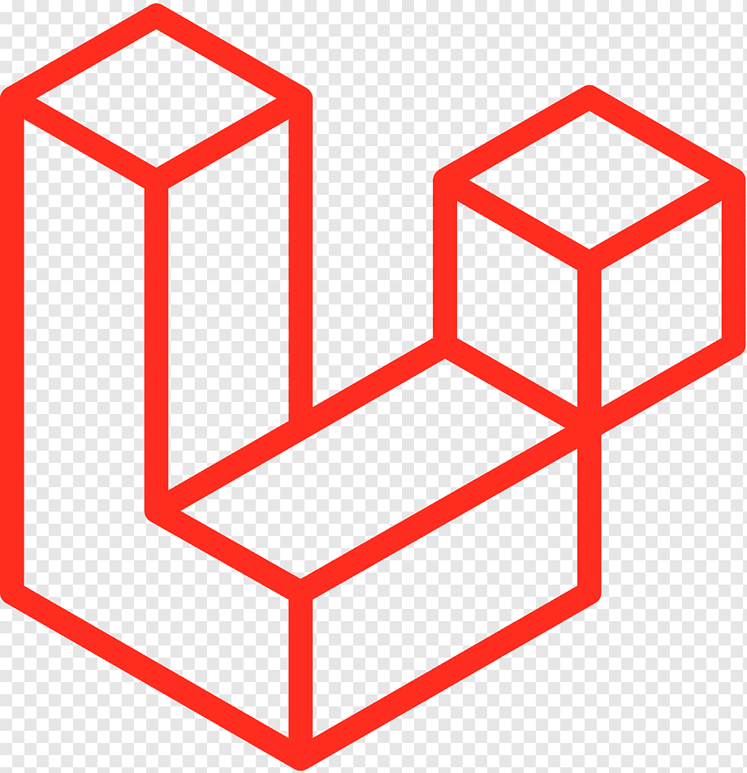
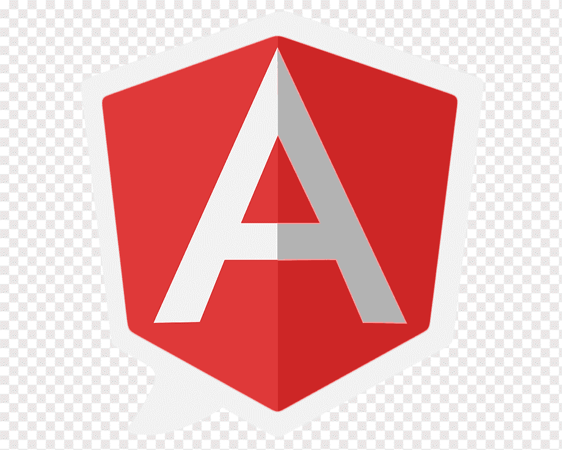

Front-end web development refers to the process of designing and building the user interface and user experience of a website or web application. It involves creating the visual aspects of a website, including the layout, graphics, and interactions, using programming languages such as HTML, CSS, and JavaScript. Front-end developers use frameworks and libraries like React, Angular, and Vue.js to build responsive, user-friendly interfaces that provide a seamless experience for users. Their primary focus is on the client-side of the web, ensuring that the website looks and functions as intended.
Front-end technologies serve as the foundation and building blocks of a website, defining its user interface and shaping the overall user experience. Front-end enables you to interact with the web and its actions. In modern web development, an array of tools, frameworks, and practices contribute to creating engaging and responsive websites. Let's take a look at a list of front-end technologies that are pretty much the backbone of modern web development.


HTML5 CSS JAVASCRIPT REACTJS
Back-end web development refers to the server-side of web development, where the focus is on creating the functionality and logic of a website or web application. This involves building the back-end infrastructure using programming languages, frameworks, and databases to manage data, perform calculations, and handle user interactions. Key skills for back-end web development include knowledge of programming languages such as Python, Ruby, or PHP, as well as frameworks like Django, Ruby on Rails, or Laravel. Understanding database management and API integration are also essential components of back-end web development.
Back-end technologies refer to the underlying systems and software that power the user interface and user experience of a website or application. These technologies include server-side programming languages, databases, APIs, and frameworks that enable data storage, processing, and retrieval. Common back-end technologies include Java, Python, Ruby, PHP, and Node.js, as well as databases like MySQL, MongoDB, and PostgreSQL. They are used to build the logic, security, and functionality of an application, and are often deployed on servers or cloud infrastructure. Effective back-end technologies are crucial for a website or application's performance and scalability.



LARAVEL NODE.JS PHP FLASK
The MERN stack is a popular web development technology stack that consists of four key components:


MONOGODB EXPRESSJS REACTJS NODE.JS
The Mean Stack is a collection of technologies used for building dynamic web applications. It consists of:

MONOGODB EXPRESSJS ANGULARJS NODE.JS